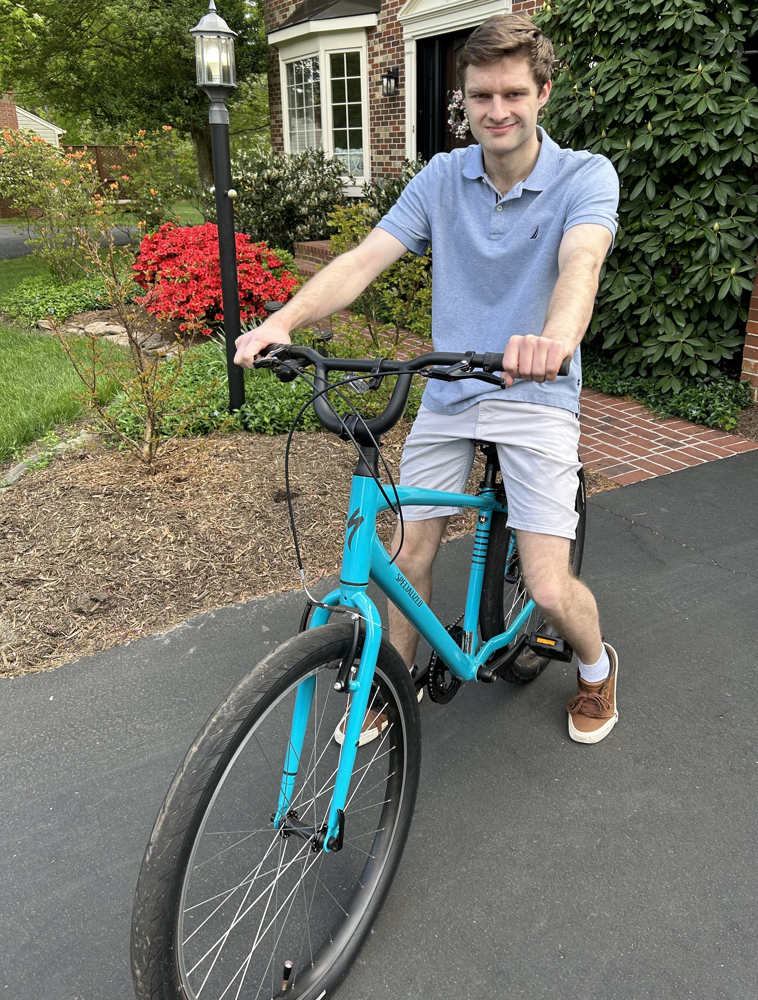

About Austin
Hello, my name is Austin White. I was born on August 26th, 1997, and have lived my entire life in the Northern Virginia area. The fourth of five children, I took an interest in computers from my father, who moved to northern Virginia 30 years ago to work at the Washington Post. Originally a sports editor, my dad then moved to working on the Post's website before leaving the Post to become a Project Manager for multiple different companies. I received my GED in 2019, and attending Northern Virginia Community college, where I received an Associate of Science Degree. I am now attending George Mason University, where I am working on receiving a Bachelor of Science degree in IT, with a focus on web development and multimedia. I am expected to graduate by the end of 2024. I greatly enjoy creating interactive websites, apps, and even video games. I hope to begin employment as a junior web designer following my graduation. In my spare time I enjoy riding my bike and playing video games. Video games have long been my passion, so much so I’ve taken some online game design classes not associated with GMU and experiment with Blender, an open-source 3D computer graphics software tool. I am an excellent public speaker and have been told numerous times I have the qualities of a great leader. I am a lector at my local church and volunteer bi-weekly at their food pantry. I also work part-time as a server at a local restaurant called The Black Sheep and have been employed there for the last year and a half. Thank you for reading about me and have a nice day!